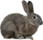

Hi! I am a freshman at Carnegie Mellon University studying information systems. I made this website to compile resources for easy access for any rabbit owner or prospective rabbit owner. It includes a catalog of rabbits up for adoption at various shelters around Pittsburgh, a list of rabbt care resources, directions to the animal shelters, and a way to contact me. Additional pages include a link to an external site explaining the pros of adopting pets and an About Me page. I chose to make this website because I have a rabbit of my own, and I think that they are pretty cool pets and that everyone should have them. My aim with this site is to make the process of researching about owning a rabbit more approachable.
